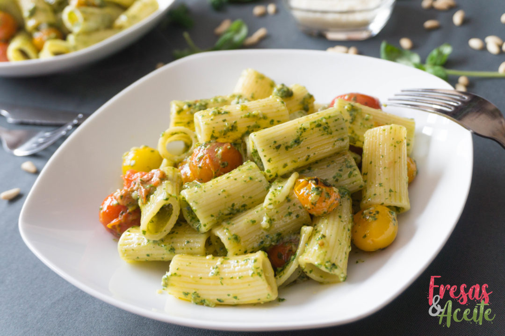

RIGATONIS AL PESTO

!!!esta pasta no es cualquier pasta si efectivamente son los rigatonis al pesto no es cualquier cosa!!!!
Ingredientes
- 250 rigatonis
- 200 tomates cherry variados
- Salsa pesto para 2 personas
- Parmesano en polvo
- sal
- Pimienta
PREPARACION
- Prepara la salsa pesto según la receta indicada anteriormente. Reserva.
- Pon a cocer los rigatoni en agua con sal siguiendo las indicaciones del fabricante.
- Lava los tomates cherry. Cuando a los rigatoni le falten unos 7-5 minutos, echa un chorrito de aceite en una sartén amplia y saltea los tomates a fuego medio con un poco de sal y pimienta.
- Cuando la pasta esté lista, escúrrela y viértela en la sartén de los tomates. Añade la salsa pesto y deja que cocine un par de minutos a fuego medio
- Sirve los rigatoni al pesto en los platos y espolvorea con parmesano en polvo al gusto.
AAAAAAHHHHH COOOOMMMMEEEERRR!!!!!